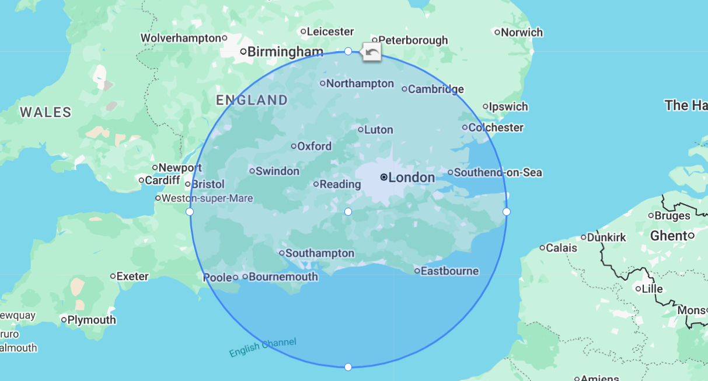

Envirosafe Removal provides asbestos surveys and removal services across London and the South East. Below you can explore each town and borough we serve. Click on your area to learn more about our local services.
Contact our friendly team today to discuss asbestos removal services in your area. We provide free quotes and expert advice.
Contact Us